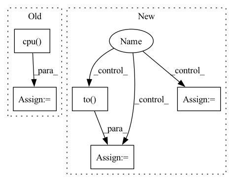

Pattern ID :36242
Before Change
batch, targets, lengths
) //// sorts the batch wrt the length of sequences
pred = model(
torch.autograd.Variable(batch).to(device), lengths.cpu() .numpy()
) //// perform forward pass
pred = torch.squeeze(pred)
loss = criterion(After Change
sents2_len,
targets,
_,
_ ,
) in data_loader["val_loader"]:
//// perform forward pass
pred = model(
sent1.to(device),
sent2.to(device),
sents1_len.to( device) ,
sents2_len.to(device),
)
//// compute loss
loss = criterion(
pred.to(device), torch.autograd.Variable(targets.float()).to(device)
)
y_true += list(targets.float())
y_pred += list(pred.data.float().detach().cpu().numpy())
total_loss += loss
//// computing accuracy using sklearn"s function
acc = r2_score(y_true, y_pred)In pattern: SUPERPATTERN
Frequency: 3
Non-data size: 5
Instances Fragment ID: 102672799
Project Name: shahrukhx01/siamese-nn-semantic-text-similarity
Commit Name: f3d054dd14ef532c408b1306c3341115777ac22f
Time: 2021-12-30
Author: sk28671@gmail.com
File Name: siamese_sts/trainer/train.py
M Class Name: AnonimousClass
N Class Name: AnonimousClass
M Method Name: evaluate_dev_set(5)
N Method Name: evaluate_dev_set(5)
M Parent Class:
N Parent Class:
M File Name: siamese_sts/trainer/train.py
N File Name: siamese_sts/trainer/train.py
M Start Line: 78
M End Line: 95
N Start Line: 91
N End Line: 116
Before Change
model.zero_grad()
pred = model(
torch.autograd.Variable(batch).to(device), lengths.cpu() .numpy()
) //// perform forward pass
pred = torch.squeeze(pred)
loss = criterion(
pred.to(device), torch.autograd.Variable(targets.float()).to(device)
) //// compute lossAfter Change
sents2_len,
targets,
_,
_ ,
) in dataloader["train_loader"]:
model.zero_grad()
//// perform forward pass
pred = model(
sent1.to( device) ,
sent2.to(device),
sents1_len.to(device),
sents2_len.to(device),
)
//// compute loss
loss = criterion(
pred.to(device), torch.autograd.Variable(targets.float()).to(device)
)
//// perform backward pass
loss.backward()
//// update weights
optimizer.step()
//// accumulate targets from batch
y_true += list(targets.float().numpy())
//// accumulate preds from batch
y_pred += list(pred.data.float().detach().cpu().numpy())
//// accumulate train loss
total_loss += loss Fragment ID: 102672668
Project Name: shahrukhx01/siamese-nn-semantic-text-similarity
Commit Name: f3d054dd14ef532c408b1306c3341115777ac22f
Time: 2021-12-30
Author: sk28671@gmail.com
File Name: siamese_sts/trainer/train.py
M Class Name: AnonimousClass
N Class Name: AnonimousClass
M Method Name: train_model(6)
N Method Name: train_model(6)
M Parent Class:
N Parent Class:
M File Name: siamese_sts/trainer/train.py
N File Name: siamese_sts/trainer/train.py
M Start Line: 16
M End Line: 47
N Start Line: 16
N End Line: 59
Before Change
container_2x = sdct_torch(container_wav, frame_length=4096, frame_step=62, window=torch.hamming_window).unsqueeze(0).unsqueeze(0)
loss, loss_cover, loss_secret, loss_spectrum = StegoLoss(secrets, covers, containers, container_2x, revealed, beta)
snr_audio = SNR(covers.cpu(), containers.cpu() )
psnr_image = PSNR(secrets, revealed)
ssim_image = ssim(secrets, revealed)
dtw_loss = softDTW(original_wav.cpu().unsqueeze(0), container_wav.cpu().unsqueeze(0))After Change
train_loss, train_loss_cover, train_loss_secret, train_loss_spectrum, snr, psnr, ssim_secret, train_dtw_loss = [], [], [], [], [], [], [], []
vd_loss, vd_loss_cover, vd_loss_secret, vd_snr, vd_psnr, vd_ssim, vd_dtw = [], [], [], [], [], [], []
for i, data in enumerate(tr_loader):
if prev_i != None and i < prev_i - 1: continue // Checkpoint pass
secrets, covers = data[0].to(device), data[1].to(device)
if transform == "fourier": phase = data[2].to( device)
secrets = secrets.permute(0, 3, 1, 2).type(torch.cuda.FloatTensor)
covers = covers.unsqueeze(1) if transform == "cosine" else covers
optimizer.zero_grad()
containers, revealed = model(secrets, covers)
if transform == "cosine":
original_wav = isdct_torch(covers.squeeze(0).squeeze(0), frame_length=4096, frame_step=62, window=torch.hamming_window)
container_wav = isdct_torch(containers.squeeze(0).squeeze(0), frame_length=4096, frame_step=62, window=torch.hamming_window)
container_2x = sdct_torch(container_wav, frame_length=4096, frame_step=62, window=torch.hamming_window).unsqueeze(0).unsqueeze(0)
elif transform == "fourier":
original_wav = stft.inverse(covers.squeeze(1), phase.squeeze(1))
container_wav = stft.inverse(containers.squeeze(1), phase.squeeze(1))
container_2x = stft.transform(container_wav)[0].unsqueeze(0)
Fragment ID: 102672642
Project Name: margaritageleta/pixinwav
Commit Name: 46f925c79c430a9c0ba5c2f596f7be2083026ad2
Time: 2021-03-13
Author: noticiasmundiales99@gmail.com
File Name: src/trainer_rgb.py
M Class Name: AnonimousClass
N Class Name: AnonimousClass
M Method Name: train(13)
N Method Name: train(12)
M Parent Class:
N Parent Class:
M File Name: src/trainer_rgb.py
N File Name: src/trainer_rgb.py
M Start Line: 170
M End Line: 216
N Start Line: 165
N End Line: 252